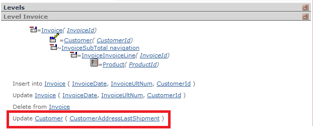

Edits/updates attributes that are not stored in any of the base tables of a Transaction object. Given a Transaction level, the only attributes that can be edited are the ones stored in the Base Table of the level. For example, in an Invoice Transaction, you can have the CustomerName in the form, but it isn't editable; the only Customer attribute that can be edited in the Invoice form is CustomerId because it is stored in the Invoice table. The Update() rule is introduced in case you need to edit CustomerName anyway in the Invoice form. SyntaxUpdate(att1, ..., attn); where: This rule is unconditional. Therefore, to conditionally allow editing of a particular attribute you should combine it with the NoAccept rule. ExampleThis example explains the canonical use of the Update rule. Suppose you have a Customer Transaction, and inside it, an attribute called CustomerAddressLastShipment. And you have an Invoice Transaction too, as shown below.
Invoice
{
InvoiceNumber*
InvoiceDate
CustomerId
CustomerName
CustomerRUT
CustomerAddressLastShipment
InvoiceLastNumber
}
ProductId*
ProductDescription
ProductPrice
InvoiceLineQtty
InvoiceLineTotal
}
}
Customer
{
CustomerId*
CustomerName
CustomerRUT
CustomerAddress
CustomerAddressLastShipment
CustomerMail
CustomerBalance
CustomerPhone
}
The CustomerAddressLastShipment attribute is inferred from the Customer table and it is displayed on the screen in a read-only mode. However, the shipping address could change; in this case, the rule can solve it. Update(CustomerAddressLastShipment); The operator may change the address, and this new information will be stored in the Customer table.  Considerations
If the foreign key determining the inferred attribute can be changed (i.e. it does not belong to the primary key of the base table) and it is changed in different transactions (work units), the value of the inferred attribute for the "original" foreign key value is not restored. An example may clarify the concept: Suppose you have two Transactions: Customer and Invoice, which are related. CustomerCod is a Foreign Key (FK) in the Invoice and it has this rule: Update(CustomerName); It has an Invoice #1 with CustomerCod = 1 whose CustomerName = "Customer_x". The CustomerName value is changed (in fact, CustomerName is updated in the Customer's table) in Invoice #1 to "Customer_new" and the Invoice is confirmed. After that (in a new LUW) the CustomerCod for invoice #1 is changed to another value, for example, CustomerCod = 2. This change doesn't mean the Customer #1 Name is restored to its original value. Scope
|
| Backlinks |
| Toc:GeneXus - Table of contents |